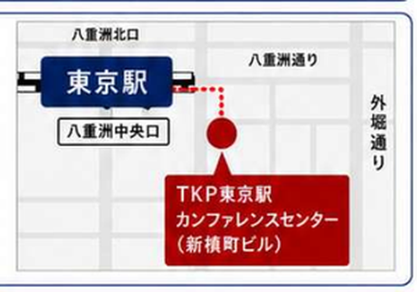
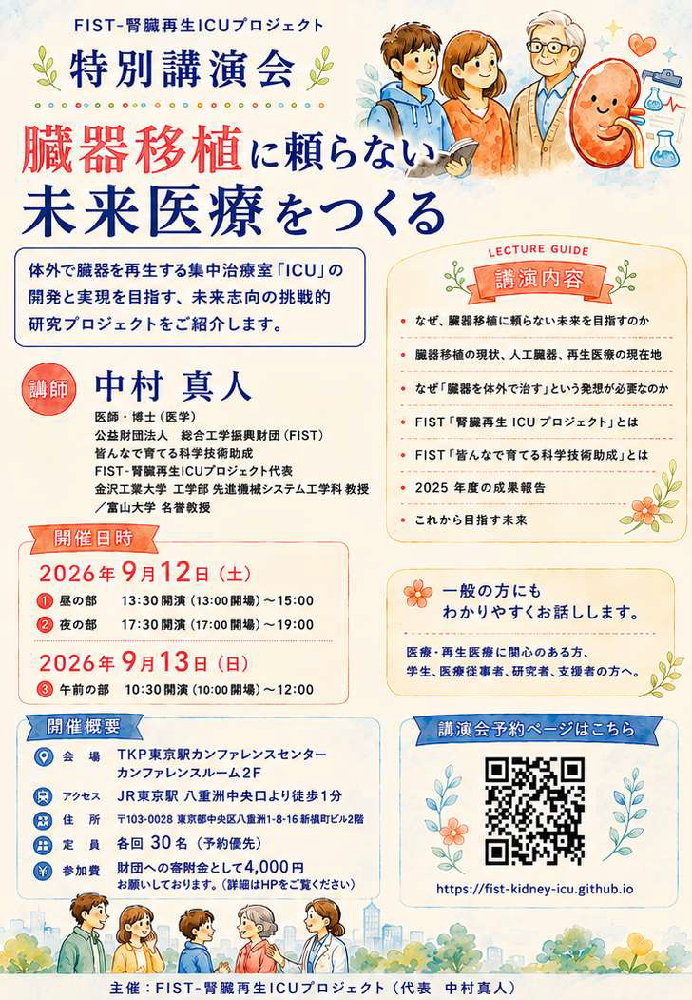

WHO SHOULD ATTEND
本講演の対象者：こんな方におすすめです
- 医療・再生医療・未来社会に関心のある一般の方、患者さん・ご家族、学生
- 医療、工学、生命科学などに携わる医療従事者・研究者・技術者
- 新しい医療技術の事業化・社会実装に関心のある企業・経営者・支援者
- 医学や科学を社会へ伝える報道・出版・サイエンスコミュニケーション関係者
- 臓器移植に頼らない未来を知り、この研究を応援し、支えたい方
＊専門知識は必要ありません。初心者の方にも、分かりやすくお話しします。

FIST-腎臓再生ICUプロジェクト
特別講演会
開催決定
腎臓再生のブレークスルーを目指す
医工学による挑戦研究プロジェクト
講師：中村 真人 医師・博士（医学）
公益財団法人 総合工学振興財団（FIST）
FIST-腎臓再生ICUプロジェクト代表
金沢工業大学 工学部 教授 ／ 富山大学 名誉教授
元 医薬品医療機器総合機構（PMDA）科学委員
元（財）神奈川科学技術アカデミー
中村バイオプリンティングプロジェクトリーダー
WHO SHOULD ATTEND
＊専門知識は必要ありません。初心者の方にも、分かりやすくお話しします。
LECTURE GUIDE
LECTURE INFORMATION
2026年9月12日（土）
①昼の部：13:30開演（13:00開場）～15:00
②夜の部：17:30開演（17:00開場）～19:00
2026年9月13日（日）
③午前の部：10:30開演（10:00開場）～12:00
〒103-0028 東京都中央区八重洲1-8-16 新槇町ビル２階
JR東京駅 八重洲中央口より徒歩1分

Googleマップ4,000円 参加費4,000円は、公益財団法人 総合工学振興財団の公募寄附金として徴収いたします。
各回30名講演会予約ページから各回ごとの予約状況を確認し、お申し込みください。予約がない場合は、空席がある場合にのみ受け付けます。
FIST-腎臓再生ICUプロジェクト（代表 中村 真人）
SPEAKER PROFILE

中村 真人
医師・博士（医学）
公益財団法人 総合工学振興財団（FIST)皆んなで育てる科学技術助成FIST-腎臓再生ICUプロジェクト代表金沢工業大学 工学部 先進機械システム工学科 教授富山大学 名誉教授
小児科医として臓器移植を待つ患者と向き合った経験から、「臓器移植に頼らない未来」を目指して、人工心臓の研究に従事。その後、再生医療の研究に医工学技術を導入し、バイオプリンティング・バイオファブリケーションの新分野を開拓し、国際バイオファブリケーション学会の設立と推進に貢献した。
現在、それらの経験を踏まえて、「臓器をつくる、育てる、再生する」をテーマに、新技術開発、新学術の領域開拓に果敢に取り組んでいる。2025年度、（公）総合工学振興財団、皆んなで育てる科学技術研究助成で本プロジェクト研究を提案し、活動をスタートした。
専門領域：再生医工学、生体医工学、人工臓器、生命工学、先進治療学
もっと詳しいプロフィールEVENT FLYERS
未来医療のイメージを伝える版と、一般の方にも親しみやすいほのぼの版の2種類をご用意しました。
FUTURE MEDICINE EDITION
 未来医療イメージ版をダウンロード
未来医療イメージ版をダウンロードWARM & FRIENDLY EDITION

ほのぼの版をダウンロード